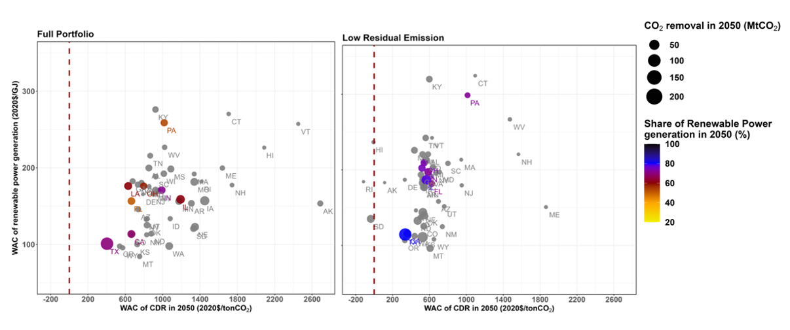

A new study published in Environmental Research: Energy analyzes the impacts of various carbon dioxide removal (CDR) pathways on the energy-water-land system across 50 U.S. states using an extended version of the GCAM-USA 6.0 integrated assessment model.
The research explores different CDR approaches such as biochar, enhanced rock weathering (ERW), direct ocean carbon capture with storage (DOCCS), bioenergy with carbon capture and storage (BECCS), and direct air capture with storage (DACCS) to achieve net-zero emissions goals.

The findings indicate that achieving 1.4 to 1.9 GtCO2/yr of CDR by 2050 is necessary across all scenarios, with the type and scale of CDR deployment varying significantly based on each scenario’s assumptions. The deployment of CDR technologies is highly influenced by state-specific resource availability and economic structures. States with high geological storage capacity showed significant reliance on DACCS, while land-intensive technologies such as biochar and ERW were more prevalent in agricultural states of the Midwest.
Texas is projected to account for approximately 19% of the total U.S. CDR by 2050, utilizing a comprehensive suite of CDR technologies. In contrast, California faces challenges in offsetting its high net-positive emissions due to the limited availability of cost-effective CDR options. The study emphasizes the need for policies that consider regional advantages and constraints, highlighting the effectiveness of a balanced approach between renewable energy sources and CDR technologies for achieving cost-effective net-zero emissions.
“There’s no silver bullet for achieving net-zero emissions,” said Prof. Haewon McJeon of KAIST Graduate School of Green Growth and Sustainability, who coauthored the study. “To ensure effective deployment of CO2 removal technologies, we need to better understand the region-specific circumstances surrounding their use.”
By integrating a diverse set of CDR technologies, this study provides insights into the complex interactions between CDR strategies, sectoral mitigation efforts, and the energy-water-land system in the U.S. The results underline the importance of considering state-specific resources and economic conditions in the deployment of CDR. Additionally, the findings can be applied to other regions or countries engaged in collective decarbonization efforts, offering valuable information for developing strategic pathways towards net-zero emissions.
Read the full paper here: https://doi.org/10.1088/2753-3751/ad81fb
한국어 요약
미국의 지역 자원 및 기술 가용성이 이산화탄소 제거 잠재력에 미치는 영향
국제 학술지 Environmental Research: Energy에 최근 발표된 본 연구는 GCAM-USA 6.0 통합평가모델을 확장하여, 미국 50개 주의 에너지-물-토지 시스템에 다양한 이산화탄소 제거(CDR) 경로가 미치는 영향을 분석한다. 연구에서는 바이오차 (biochar), 강화된 암석 풍화(ERW), 직접 해양 포집 및 탄소 저장(DOCCS), 바이오에너지와 탄소 저장(BECCS), 직접 공기 포집 및 탄소 저장(DACCS)과 같은 다양한 CDR 접근 방식을 통해 탄소 중립 목표를 달성하는 방법을 탐색한다.
분석 결과, 2050년까지 모든 시나리오에서 연간 1.4~1.9 GtCO2의 탄소 제거가 필요하며, 각 시나리오의 가정에 따라 CDR 기술의 종류와 배치 규모가 크게 달라짐을 확인했다. CDR 기술의 배치는 주별 자원 가용성과 경제 구조에 따라 큰 영향을 받은 것으로 나타났다. 지질학적 탄소 저장 용량이 높은 주에서는 DACCS에 대한 의존도가 높았고, 바이오차와 ERW와 같은 토지 집약적 기술은 중서부 농업 주에서 더 많이 활용되었다.
텍사스는 2050년까지 미국 전체 CDR의 약 19%를 차지하며, 포괄적인 CDR 기술을 활용할 수 있는 능력을 보여주었다. 반면, 캘리포니아는 비용 효율적인 CDR 옵션의 부족으로 인해 높은 순배출량을 상쇄하는 데 어려움을 겪고 있음을 확인했다. 본 연구는 각 지역의 장점과 제약을 고려한 정책의 필요성을 강조하며, 재생 가능 에너지원과 CDR 기술의 균형 잡힌 활용이 비용 효율적인 탄소 중립 달성에 효과적임을 시사한다.
KAIST 녹색성장지속가능대학원의 전해원 교수에따르면 “탄소 중립을 달성하기 위한 만능 해결책은 없다”라고 시사하며 “CO2 제거 기술의 효과적인 배치를 위해서는 각 지역의 특수한 상황을 보다 깊이 이해할 필요가 있다.”라고 이 연구의 중요성을 강조한다.
본 연구는 다양한 CDR 기술을 통합하여 CDR 전략, 부문별 감축 노력, 에너지-물-토지 시스템 간의 복잡한 상호작용에 대한 통찰을 제시한다. 또한, 연구 결과는 주별 자원과 경제적 여건을 고려한 CDR 배치의 중요성을 강조하며, 미국 외 다른 국가나 지역이 집단적 탈탄소화를 달성하는 데 있어 전략적 경로를 개발하는 데 도움이 될 수 있는 유용한 정보를 제공한다.